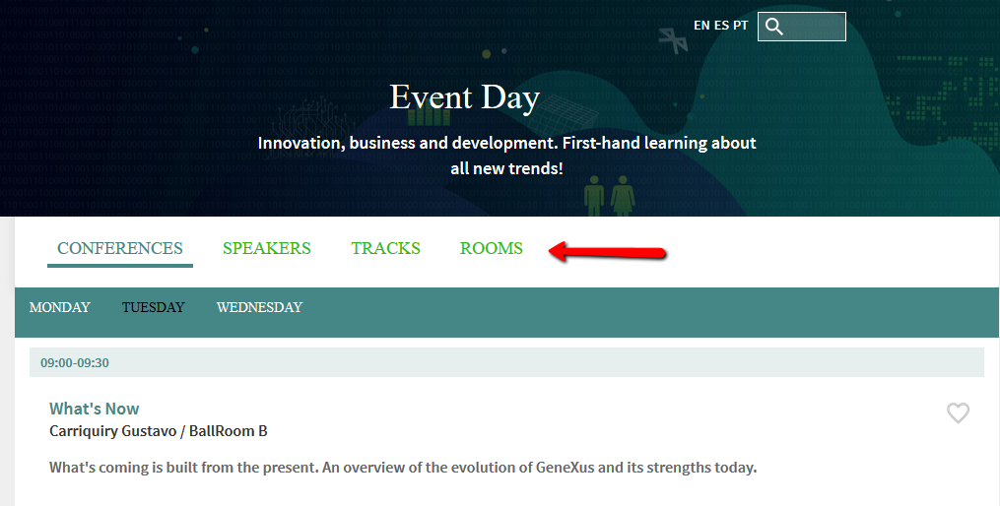
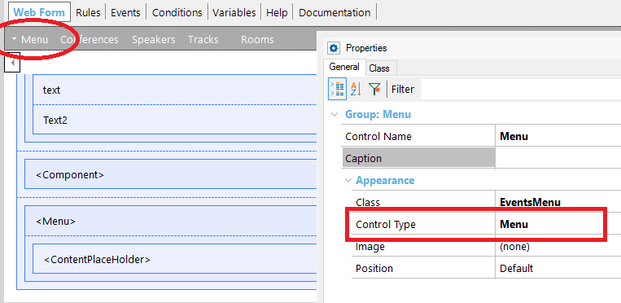
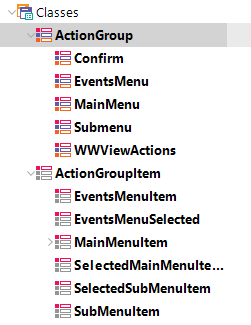

The Action Group Control for the Web can be displayed as a navigation bar, based on Bootstrap Navbars. This feature is available for Responsive Web Design applications, and it's supported by the Abstract layout. At first, the Navbar is collapsed (and toggleable) in mobile views and becomes horizontal as the available viewport width increases (for desktop screens). So, in small, medium and large screens it looks as follows:  But in extra small screens it is displayed as a collapsible menu: How to add a navigation bar to your web page1. Add an Action Group 2. Configure the Action Group's Control Type property to "Menu".  3. Then, you can configure the Navigation Bar style in the Theme, through the following classes:
 There are special class properties which may be very useful. They are all listed in the following table (all of them should be ActionGroupItem or a descendant):
Temporary restrictions
|
| Backlinks | |
| Action Group Control for the Web | |
| How to create a dynamic menu for WEB applications | Menu for Web Applications |